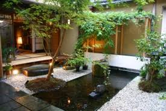
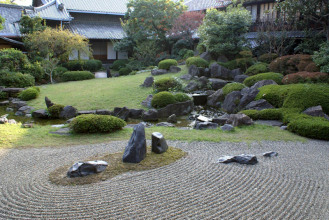

Cómo hacer un jardín Zen
El primer paso para hacer un jardín Zen es localizar un espacio que sea apropiado para la contemplación,lejos de los animales y niños que puedan perturbar su diseño


Qué es y para que sirve un Jardín Zen
El jardín Zen (jardín seco) es un espacio de meditación y contemplación en conjunción con la naturaleza, diseñado por los japoneses hace más de trece siglos. Detrás de los Jardines Zen existe toda una filosofía basada en el budismo,